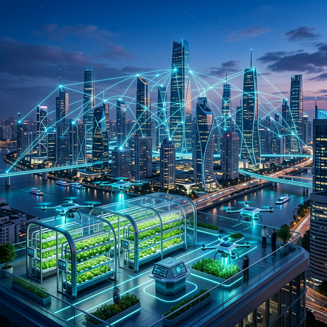
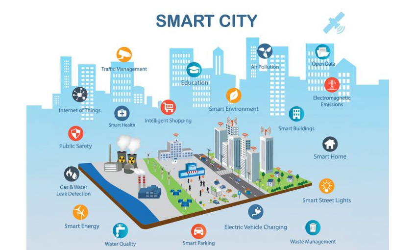
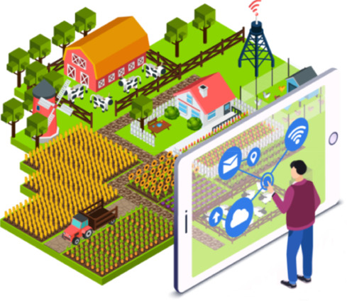
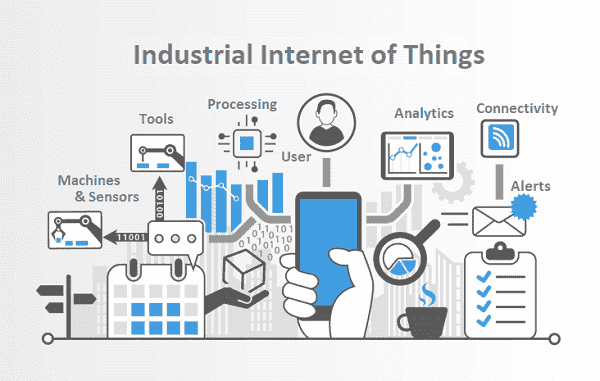
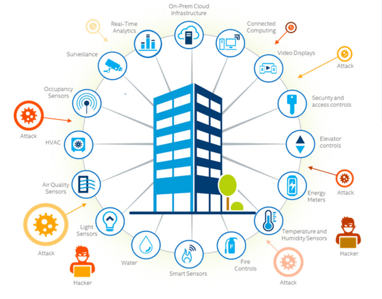
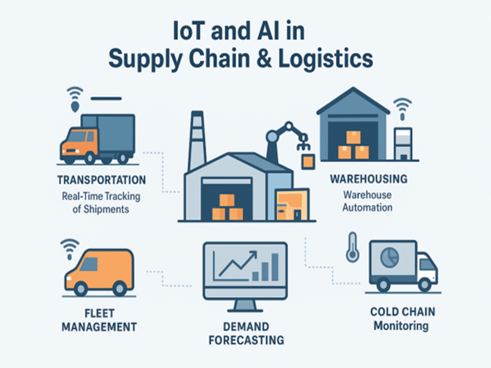
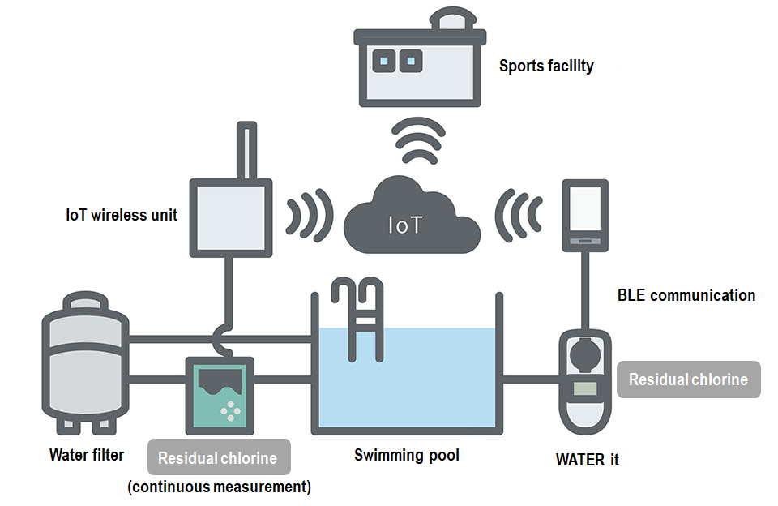

Connecting devices, data, and decisions for a smarter tomorrow. We provide end-to-end IoT implementation from hardware to cloud.
Get StartedExplore our successful IoT implementations across various industries in Thailand.

Cloud-based lighting control system that reduces energy consumption by up to 40% while enhancing public safety through automated motion sensing.

IoT-enabled sensors monitoring soil moisture and climate data to trigger automated irrigation, optimizing water usage and yield quality.

Real-time health monitoring for industrial boilers and cooling systems, preventing downtime through predictive maintenance alerts.

Comprehensive environmental and energy monitoring for commercial buildings, reducing operational costs through automated HVAC and lighting control.

GPS and Bluetooth-based tracking solutions for high-value logistics, ensuring secure transport and improved cold chain visibility.

Continuous monitoring of pH, DO, and turbidity levels for aquaculture and water treatment facilities to guarantee safety standards.